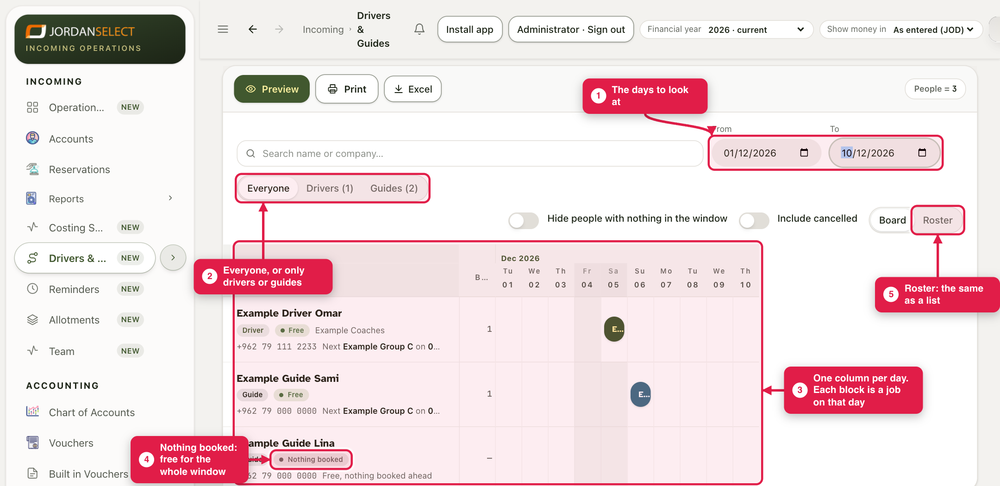
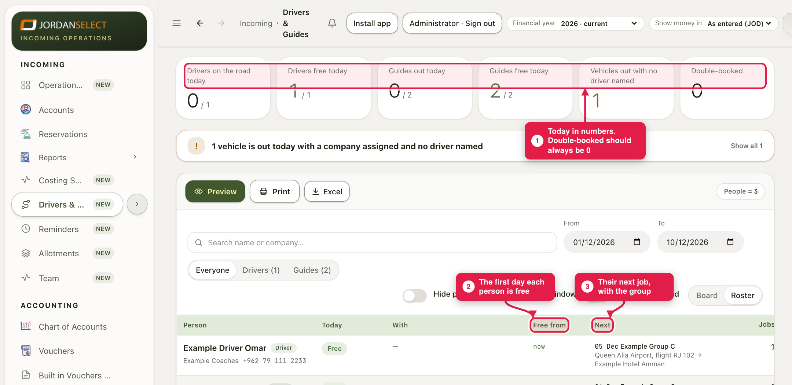

See every driver and guide, day by day: who is with which group, and when each one is next free.
WhoOperations
WhereIncoming → Drivers & Guides
TakesSeconds
You needThe days you are planning
How it works
Nothing is typed on this screen. It reads the transport and guide lines on every file. Assign a driver or a guide on a file (guides 2 and 3) and the board changes by itself.
Example in this guide: 1 to 10 December. Example Driver Omar works on the 5th, Example Guide Sami on the 6th, and Example Guide Lina has nothing booked.
1. The board
1
Open Incoming → Drivers & Guides. Set From and To to the days you are planning.
2
Show Everyone, or only Drivers or Guides. Type a name or a company in the search box to find one person.
3
Each row is a person, each column a day. A block is a job on that day. A row with Nothing booked is free for the whole window.

The board. Both ends of a job count as working days.
2. The roster
4
Click Roster for the same people as a list: who is out today, the first day each is free, and their next job.

The tiles at the top count today. Double-booked should always be 0.
The same driver twice?A driver is a company plus a name as typed. If one person shows on two rows, the name was spelled two ways. Open the file with the odd spelling and pick the right name.
Print or ExcelPrint or Excel at the top gives you the board as it is, for the desk or to send to a company.
Questions? Ask the operations manager. · Last checked: 11 Nov 2026 · Screens shown are from a test copy of the CRM with made-up data.